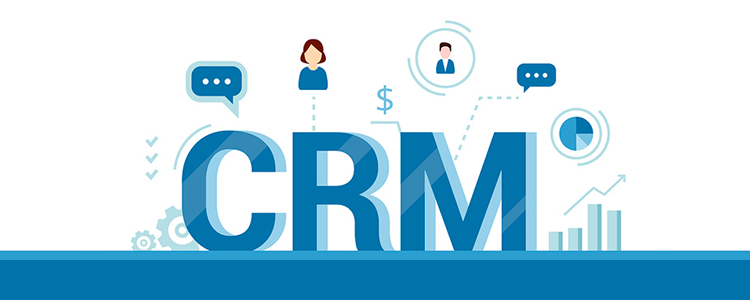
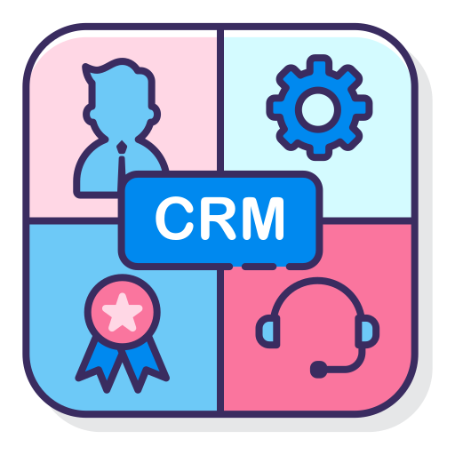
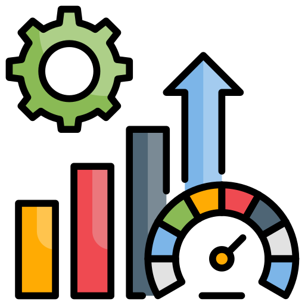

CRM - Customer Relationship Management

O que é CRM?
O CRM é uma estratégia que consiste na utilização de diversas táticas de negócios, com suporte tecnológico, para gerenciar o relacionamento com o cliente. Mas mais do que isso, é também tudo mais que possa ajudar o gerenciamento dos clientes e a compreensão de quais são os seus desejos e necessidades, podendo assim, antecipá-los. Tudo isso acaba, por fim, gerando mais vendas e auxiliando a captação de mais clientes. Ou seja, com o CRM as empresas utilizam todas as informações sobre os seus clientes para conhecê-los e oferecer o que eles precisam no momento certo. Para facilitar esse processo é preciso contar com uma ferramenta que armazena dados como:
- atividades diárias;
- contatos que já fizeram com a empresas;
- interações por telefone;
- dados gerais como nome, telefone, endereço, entre outros.

O que é um sistema de CRM ou software de CRM?
O software de CRM é o sistema responsável pelo gerenciamento da relação entre o consumidor e a empresa.
Sendo assim, o software de relacionamento com o cliente armazena dados relevantes para sua empresa, sua equipe de vendas e marketing acerca dos clientes potenciais e atuais.
Entre essas informações estão nome, telefone, endereço, preferências, últimos contatos, etc.
Ele identifica padrões de comportamento que possibilitam a antecipação das demandas, satisfação dos consumidores e otimização da rentabilidade da empresa.

Por que as empresas buscam um CRM?
As empresas buscam, com o sistema de CRM, os seguintes objetivos:
- fortalecer o relacionamento com os seus clientes;
- fidelização por meio a automatização de processos e serviços.
A fidelização é alcançada com o atendimento de todas as demandas do consumidor e gerando satisfação. Quando surgir a necessidade de realizar uma nova transação, o cliente pensará primeiro em buscar a sua empresa, pois recordará de sua boa experiência

Como funciona um sistema de CRM?
O sistema de CRM tem como principal objetivo ajudar as equipes de vendas a fechar mais negócios e em menos tempo, com o auxílio da tecnologia.
Isso acontece por meio de automações que o sistema de CRM realiza gerando tarefas que contribuem para a conversão de novas vendas. A ferramenta atua de forma inteligente e ajuda a equipe a dar atenção a todas as etapas do processo de vendas.
Um sistema de CRM é composto por uma grande gama de funcionalidades. Como existem diversas opções de software no mercado, cada uma delas está munida de um conjunto próprio. Vamos listar algumas das mais comuns:
- gestão dos dados dos clientes ─ é possível rastrear ativamente qualquer informação relativa aos consumidores;
- centralização da base de dados ─ todos os membros da equipe de vendas, marketing e qualquer outro colaborador podem acessar as informações;
- captura de dados via e-mail ─ facilita o armazenamento inteligente de e-mails enviados pelos clientes;
- simplificação de tarefas rotineiras ─ com a automatização as tarefas repetitivas podem ser delegadas ao sistema;
- fornecimento de recomendações ─ realiza a análise das informações dos clientes para verificar potencialidade e gerar insights;
- capacidade de expansão ─ a complexidade das planilhas é proporcional à quantidade de dados. No CRM, essa dificuldade é inversamente proporcional: quanto mais informação, mais fácil será acompanhar o seu cliente e seus negócios.
Quais os tipos de CRM?
- CRM operacional: foca nas tarefas do dia a dia dos vendedores e no atendimento aos clientes;
- CRM analítico: traz os dados e KPIs, tanto da performance dos vendedores como das vendas;
- CRM colaborativo: permite que os dados operacionais e analíticos sejam acessados de forma integrada, proporcionando uma melhor gestão do negócio;
- CRM estratégico: é um CRM completo, com todas as funções anteriores, permitindo a adoção de estratégias mais efetivas e uma tomada de decisão mais ágil.

Qual a importância do CRM (Customer Relationship Management) para as empresas?
Vivemos a era da transformação digital e da ascensão tecnológica. Isso permite que cada vez mais os clientes estejam no centro das operações e tenham acesso a todas as informações necessárias.
Da mesma maneira, permite que as empresas conheçam a fundo o seu público e trabalhem para, cada vez mais, atender às suas necessidades. Neste cenário, o cliente se torna ainda mais disputado e valorizado por quem o conquista.
Isso porque o consumidor não é mais apenas um espectador. Com acesso total à informação, de onde puder e no tempo que quiser, os compradores se tornam muito mais ativos no processo de compra.
isso, a construção da confiança com esse consumidor, ou seja, a criação do relacionamento com o cliente, é o que permite que a sua empresa se destaque em relação às demais.
Sendo assim, a utilização da solução pode ser feita por empresas de pequeno, médio e grande porte que tem o objetivo de analisar as interações realizadas com seus clientes para criar uma estratégia totalmente centrada no consumidor.
Por ele é possível identificar padrões de comportamento que possibilitem a antecipação das demandas, promover a maior satisfação desses clientes e otimizar a rentabilidade dos negócios.
Ter um bom relacionamento com o cliente é essencial para qualquer negócio e pode ser o grande diferencial para as pequenas empresas que não conseguem competir em nível de igualdade com as grandes.
O bom atendimento sempre é a carta na manga para diversos negócios, já que o resto pode ser replicado.
Na verdade, essa estratégia já é aplicada há muito tempo nas companhias e, desde então, a importância dessa estratégia só vem crescendo.
Assim, dá para entender um pouco mais sobre como funciona o CRM nas empresas e o potencial que ele tem para as organizações.
O sistema de CRM se faz necessário quando o caderninho já dá mais conta de registrar todas as interações daquele cliente com sua empresa e informações valiosas começam a ser perdidas e oportunidades de encantamento passam a ser desperdiçadas.

9 benefícios do CRM para os profissionais da área de vendas
- Maior controle das vendas;
- Maior controle das propostas;
- Maior controle da prospecção;
- Criação de tarefas para a realização de follow up;
- Maior gestão e controle de tempo;
- Melhora o relacionamento com os clientes atuais;
- Melhora a comunicação da equipe;
- Oferece maior poder de gerência;
- Otimização dos recursos.